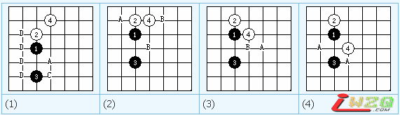

瑞星是著名的四大平衡局之一，而其所以平衡是有道理的。看上边的图，可以看出白应点不同，黑的胜负状况 也不一样，A是黑的必胜点，B表示黑方优势或稍微占优，C是平衡，D表示黑必败。
从上边的图中就可以看出，白4手的最强防守点是图一的防守位置.除此之外其他3个图中的防都是比较弱的，而 如果采用了图4中的防守，那么就一定是白必输了。因为在五手两打里，白只能去掉黑的一个点，如果按图4的 防守，黑走出5、7后，白尽管去掉了一个，但黑仍然还有一个必胜点的存在。所以白必输。
这里需要说明的是，什么是必赢点，必赢点的概念是什么？通俗的讲，必赢点就是走在这个点的时候，无论你 怎么应，都始终能在后边的发展中占据优势，直到胜出。也就是说对该点的所有应点任意穷举，始终无法阻挡 住该点带给后势的必然胜利结果，我们就叫它必赢点。看看下边的图，就知道黑是如何进攻的。同时借这个机 会，看看怎样的棋走偏锋，拉动大盘。
黑7是唯一的必赢走法落点，如果走在G5则是黑必输。白8正着，有的朋友问过我，是不是可以走在G5，G5的点 也是可以的，只是会很快的就输掉，但G5的点包括骗着的手法在里边，带有一定的欺骗性，如果黑走了G8则白 没戏了必输，但如果不是走在G8一般后面的变化是黑输，有多种抓禁手的走法。g5点我走过一次，是在和一个 号称是全国少儿组第10名的棋手对局中，当时走这一手，是因为，我走黑瑞星平衡点图1中C的位置，拿下第一 局过程中发现对方对定式非常熟悉，所以他走黑开出瑞星5手必赢点后又走出了7手唯一的必赢位置，我知道我 肯定会输掉，所以不得不变换方法，应了G5的位置，对方思考了很长时间，就走出了G7一手，盘面立刻从黑必 赢变成了平衡的局面，再后来我连续打出最强手的白应点，使黑陷入困境，截止第36手，抓禁手胜出。这里需 要提一下的是，在对局中，势力的较量同时，还包含着心理的较量，看人点菜是很有必要的，很多时候不一定 非要走出最强手，因为最强手，已经被那些连珠界的好手全部分析完了，后来的人背下了各个点的变化，一样 能胜，但走的不是最强手的时候，对于不懂棋理的对手来说，往往有意想不到的效果出现。使自己瞬间出现专机。
再回到我们的话题上来，左边大图只是其中的一种必赢走法，也相对比较简单，黑15手间接应白的43威胁，同 时开始做拉动棋盘中心走偏锋的准备，白16应I5必然。黑17整形，形成飞雁的必赢棋型，黑19是飞雁的必杀走 法，正着，白20强防，后势黑继续补厚，加大偏锋攻势，至33手做杀。
黑15手后，明显后手17不能走在I6，看上去好象黑跳4后有43的杀，但白有眠三在上，几个交换手以后黑就会失 去力量。转成弱势。所以17是正着。
这个变化比较简单，一般来说黑成3后，白有两边的不同的直接应点，对于跳3会出现三个直接应点，这里不包 括（间接应点，黑15就属于对白43的间接应点。）针对不同的应点，黑的走法也有所不同，这里说的是比较简 单的黑的变化，如果中间变化应点，黑后边变化比较复杂，为了能叫初学的朋友，看的懂所以就没有举复杂的 变化出来，如果你想进一步提高，不妨尝试着找一下白其他应点变化的黑走法。